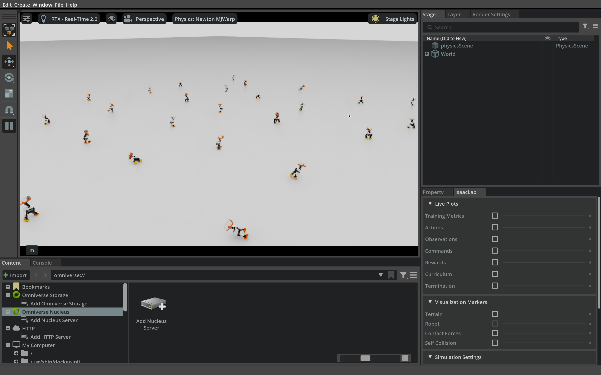
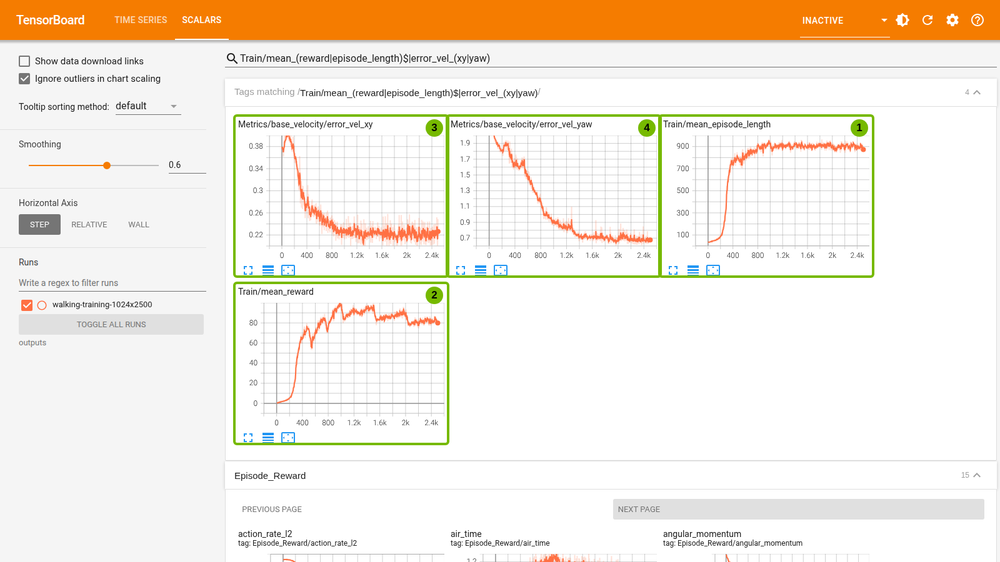
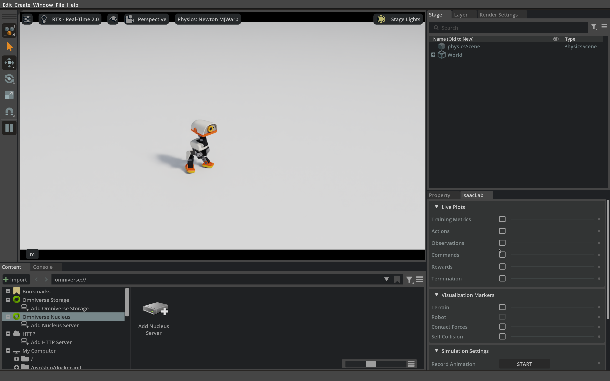

3.3 Train and test a walking policy#
The observations, actions, rewards and Actor-Critic roles are now defined. Put them into practice: examine domain randomization, read the reward and PPO code, start parallel training and test an exported walking policy.
What domain randomization is#
Every simulation parameter is one definite number: foot friction, torso mass, the delay between a servo receiving a target and starting to move… Real robots all differ. Domain randomization takes a simple approach: since we do not know the real values, each parallel environment draws its own set of parameters during training. The policy faces thousands of “slightly different robots” at once and earns a high overall return only by learning actions that work for all of them.
Variable meanings
- \(J(\theta)\)
- Learning objective under domain randomization: the expected discounted return averaged over many random sets of simulation parameters.
- \(\theta\)
- Policy network parameters (weights), updated during training.
- \(\mathbb E_{\xi\sim p(\xi)}\)
- Average over randomly drawn parameter sets.
- \(\mathbb E_{\tau\sim\pi_\theta,\,\xi}\)
- Average over trajectories sampled with the current policy in the simulation defined by \(\xi\).
- \(t\)
- Control-step index.
- \(T\)
- Number of control steps of an episode that count toward the return.
- \(\gamma\)
- Discount factor; 0.99 in the course training.
- \(r_t\)
- Immediate reward at the current control step: the weighted sum of the reward terms.
Compared with Section 3.1 there is one more average: first draw a parameter set \(\htmlData{sym=xi}{\xi}\) from the distribution \(\htmlData{sym=p_xi}{p(\xi)}\), then sample trajectories with policy \(\htmlData{sym=pi_theta}{\pi_\theta}\) under those parameters. The PPO update is unchanged; what changes is the data, since one batch mixes many conditions.
What can be randomized#
Category |
Examples |
This walking training |
|---|---|---|
Dynamics |
Friction, mass and centre of mass, joint friction and inertia, servo delay and voltage, external pushes |
On |
Observation |
Sensor noise, encoder zero offsets |
On |
Initial state and command |
Start position and heading, size and timing of velocity commands |
On |
Terrain |
Slopes, steps, roughness |
Off (flat ground); used by the slope training in Section 3.4 |
Visual |
Lighting, materials, background, camera parameters |
Off: the walking policy reads no images; discussed in Section 5.3 |
Why walking needs it#
Walking depends entirely on foot-ground contact and servo response, which are exactly what simulation finds hardest to get right: servo friction differs between batches, battery charge changes servo output, encoder zeros are slightly off, and floors are soft or hard. A policy trained only on one “perfect” parameter set may rely on its details and lose balance on another robot or floor. This gap between simulation and reality is often called the sim-to-real gap.
Choosing ranges is a trade-off. Too narrow, and the policy still fits only a few cases; too wide, and the task may become too hard, so the policy learns conservative, sluggish motions or nothing at all. Ranges are best based on measurements or hardware specifications, such as measured servo delays or the battery's operating voltage. Domain randomization covers only the differences you thought of and wrote into the configuration; it does not replace testing on hardware.
Which randomizations this training uses, and how they are configured#
Isaac Lab implements randomization with its event manager. Each event has a trigger: startup samples once when the environment is created and then keeps the value; reset samples again whenever that environment resets; interval fires at time intervals during an episode. The table comes from the env.yaml saved by the full training. Note that it stores both initial values and curriculum settings: some ranges widen as training progresses, so the initial fields alone are not the whole story.
Category |
Randomized item |
Range |
Trigger |
Real-world difference it imitates |
|---|---|---|---|---|
Dynamics |
Static and dynamic foot friction |
0.7–1.3 |
startup |
Different floors and sole materials |
Dynamics |
Trunk mass |
nominal × 0.95–1.05 |
startup |
Battery, cable and shell differences |
Dynamics |
Trunk and head centre of mass |
initially ±3 mm per axis, widened during training: trunk up to ±15 mm, head up to ±10 mm |
reset |
Uneven mass distribution |
Dynamics |
Joint friction |
nominal × 0.9–1.1 |
reset |
Servo variation and wear |
Dynamics |
Joint armature |
nominal × 0.9–1.1 |
reset |
Gear and motor differences |
Dynamics |
External push |
every 3–6 s, horizontal velocity change up to ±0.3 m/s |
interval |
Bumps, being pushed |
Dynamics |
Servo delay |
3–6 physics steps (15–30 ms) |
actuator model |
Communication and control delay |
Dynamics |
Servo supply voltage |
6.5–8.2 V, plus load-dependent voltage drop |
actuator model |
Battery charge |
Observation |
Encoder zero offset |
±0.015 rad |
startup |
Assembly and calibration error |
Observation |
Observation noise |
on |
every step |
Sensor noise |
Initial state and command |
Start position and heading |
±0.5 m, any heading |
reset |
Walking off from different places |
Initial state and command |
Velocity command |
resampled every 3–8 s; environments practicing standing rise from 2% to 25% |
command manager |
Commands change at any time |
1Foot friction is sampled when environments are created
mode="startup" draws once per environment. Static and dynamic friction lie in 0.7–1.3; num_buckets splits the range into 64 levels so thousands of environments share a few materials.
foot_friction = EventTerm(
func=mdp.randomize_rigid_body_material,
mode="startup",
params={
"asset_cfg": SceneEntityCfg("robot", body_names=MICRODUCK_FOOT_BODY_NAMES),
"static_friction_range": (0.7, 1.3),
"dynamic_friction_range": (0.7, 1.3),
"restitution_range": (0.0, 0.0),
"num_buckets": 64,
},
)2Encoder zero offset
Each joint reading gets a fixed offset within ±0.015 rad, imitating assembly and calibration error; the joint angles the policy sees differ slightly from the true ones.
encoder_bias = EventTerm(func=mdp.randomize_encoder_bias, mode="startup", params={"bias_range": (-0.015, 0.015)})3New joint friction at every reset
mode="reset" gives an environment a new friction set every time it restarts, so even one environment experiences different servo behaviour during training.
randomize_joint_friction = EventTerm(
func=mdp.randomize_bam_friction, mode="reset", params={"scale_range": (0.9, 1.1)}
)4A random push while walking
The interval event changes the body's horizontal velocity by up to 0.3 m/s every 3–6 seconds; the policy has to learn to recover its balance.
push_robot = EventTerm(
func=mdp.push_by_setting_velocity,
mode="interval",
interval_range_s=(3.0, 6.0),
params={"velocity_range": {"x": (-0.3, 0.3), "y": (-0.3, 0.3)}},
)The excerpt comes from the Microduck task configuration of the pinned Isaac Lab. Servo delay and supply voltage are not events but part of the actuator model; observation noise is part of the observation configuration. The test later in this section turns pushes and parameter randomization off to compare policies under nominal conditions.
Pollen Robotics also uses domain randomization to train the official policies. Its training repository, microduck_rl, is built on mjlab rather than this course's Isaac Lab and Newton, so the two are not the same configuration; its walking task likewise randomizes foot friction (also 0.7–1.3), mass and inertia, trunk and head center of mass, joint friction and armature, encoder zero offsets and IMU mounting angle, and applies periodic pushes (official walking task configuration ↗). The official README adds that its servo model randomizes supply voltage, voltage sag, command delay and friction (microduck_rl ↗).
Core implementation of the reward and PPO#
Section 3.2 described which terms make up the reward. Take the linear-velocity tracking term as an example of how it is written in code:
Variable meanings
- \(r_t^{v}\)
- Linear-velocity tracking reward at the current control step, between 0 and 1.
- \(\exp\)
- Exponential: 1 at zero error, approaching 0 as the error grows.
- \(\mathbf v_{xy}^{\mathrm{cmd}}\)
- Horizontal components of the velocity command (m/s).
- \(\mathbf v_{xy}\)
- Actual horizontal body velocity (m/s).
- \(v_z\)
- Vertical body velocity (m/s); its square also counts as error, discouraging bouncing.
- \(\sigma_v\)
- Tolerance scale of the velocity error, `std` in the code.
- \(r_t\)
- Immediate reward at the current control step: the weighted sum of the reward terms.
- \(\Delta t\)
- Duration of one control step, 0.02 s: reward terms are accumulated per time step.
- \(i\)
- Index of a reward term.
- \(w_i\)
- Weight of a reward term.
- \(r_{i,t}\)
- Value of a reward term at the current control step.
1Compute the velocity error
For each environment, xy_error is the squared difference between target and actual horizontal velocity; z_error is the squared vertical velocity, whose target is 0.
xy_error = torch.sum(torch.square(command[:, :2] - actual[:, :2]), dim=1)
z_error = torch.square(actual[:, 2])2Turn it into a reward between 0 and 1
The summed error is divided by std squared and passed through a negative exponential, so zero error gives 1; zero_non_finite sets numerically invalid results to 0. The reward manager then multiplies each term by its weight and accumulates over the control step \(\htmlData{sym=dt}{\Delta t}\).
return zero_non_finite(torch.exp(-(xy_error + z_error) / std**2))PPO uses the RSL-RL 5.5.1 implementation. This is the clipped objective of Section 3.1:
1Ratio of new to old policy
Subtracting log probabilities and exponentiating gives the ratio for the same action under the new and old policy. The old log probability is stored at sampling time.
ratio = torch.exp(
actions_log_prob - torch.squeeze(batch.old_actions_log_prob)
)2Clip
Advantage times ratio gives the surrogate objective; clip_param is the clipping threshold 0.2.
surrogate = -torch.squeeze(batch.advantages) * ratio
surrogate_clipped = -torch.squeeze(batch.advantages) * torch.clamp(
ratio, 1.0 - self.clip_param, 1.0 + self.clip_param
)3Aggregate the loss
The optimizer minimizes, so the code negates the objective and takes the larger term, equivalent to “maximize the smaller term”.
surrogate_loss = torch.max(surrogate, surrogate_clipped).mean()Parameter details
Discount factor, GAE parameter: 0.99, 0.95
Clipping threshold: 0.2
Steps per environment per iteration: 24
Epochs per batch, mini-batches: 5, 4
Learning rate: 0.001, adapted by KL divergence
Value-loss coefficient, entropy coefficient: 1.0, 0.01
The command below trains 1024 environments for 2500 iterations, which samples:
Variable meanings
- \(N_{\mathrm{batch}}\)
- Samples collected per training iteration.
- \(N_{\mathrm{env}}\)
- Number of parallel environments; 1024 in this section's full training.
- \(T_{\mathrm{rollout}}\)
- Control steps each environment collects per iteration, 24. This differs from the episode length.
- \(N_{\mathrm{total}}\)
- Total samples collected over 2500 iterations.
At 50 Hz, about 61.44 million interactions amount to roughly 341 hours of practice in simulation; parallel environments collect them in about 2 hours. The training entry point connects these parts:
1Create the training environments
Builds the parallel environments from the Isaac Lab task configuration and wraps them as a vectorized environment RSL-RL can read.
base = gym.make(task, cfg=cfg).unwrapped
env = RslRlVecEnvWrapper(base, clip_actions=agent.clip_actions)2Save the actual configuration
Writes the environment configuration used (observations, rewards, randomization and curriculum) and the algorithm configuration to the output folder, so each item can be checked later.
dump_yaml(str(args.output / "env.yaml"), cfg)
dump_yaml(str(args.output / "agent.yaml"), agent)3Connect the PPO trainer
OnPolicyRunner repeatedly samples and updates; runner.learn then trains for the given number of iterations.
runner = OnPolicyRunner(
env, to_dict(agent), log_dir=str(args.output), device="cuda:0"
)Start a full training and watch it in parallel#
Run the command below in the course container shell from Section 1.2 (to reopen it, see Section 1.2). It trains from a random initialization and reads no weights from any existing model; --show opens the Isaac Sim window so you see a thousand ducks practising at once, each in its own randomized environment. Use a new folder for --output.
python3 scripts/run.py train-walk \
--num-envs 1024 \
--iterations 2500 \
--show \
--output outputs/walking-training-01
Parameter details
--num-envs 1024: Environments running on the GPU at the same time; each has its own random parameters--iterations 2500: PPO sampling-and-update loops; the matching sample count is computed above--show: Opens Isaac Sim to display the parallel environments; rendering uses GPU memory and slows every iteration--output: Where checkpoints, configuration, TensorBoard logs and the exported model are saved
How long does a full training take? The course's pretrained result was trained on a DGX Spark without a window: 1024 environments × 2500 iterations, a training phase of 7246 seconds (about 2 hours), roughly 4.8 minutes per 100 iterations, with other jobs on the GPU at the time. That run used the original official collision model, while the command above uses the full-body collision model, and --show adds rendering on top, so your time will differ.
You do not need to wait for it to finish. Once the window appears and the terminal prints reward and episode length for each iteration, watch for a few minutes: in the first tens of iterations most ducks fall quickly and are reset one by one, and as iterations go by more and more stay up.
When you have seen enough, press Ctrl+C; the container keeps running. Checkpoints already saved (one every 250 iterations) remain, but exported/policy.onnx is exported only when training finishes. The test below uses the course's pretrained policy by default; to let your own training finish, you can drop --show to speed it up, then select your own model explicitly.


The training window opened by --show, at the start of training: the copies are in different gait phases, and fallen copies are reset individually. Your command uses 1024 environments, so the window shows more, denser ducks.
Training time and how to judge the result#
The course repository includes the checkpoint, exported model, configuration and TensorBoard log of this full training (datasets/walking-ppo about 12 MB). The TensorBoard curves below use that log; the green numbers match the explanations that follow.


Real TensorBoard record of the full training (1024 environments × 2500 iterations). The curves use TensorBoard's default 0.6 smoothing; the faint lines are the raw values.
Read them by number:
Mean episode length rises from about 23 to about 870 steps (an episode lasts at most 1000 steps, 20 seconds): the robot goes from falling almost immediately to staying up for most of the episode. This is the first sign that balance has been learned.
Mean episode reward rises quickly over the first 800 iterations and then fluctuates around 80 without clear further gains. A plateau does not mean the skill is perfect, only that more training with the same settings helps less.
Linear-velocity tracking error falls from about 0.38 to about 0.22 m/s: forward and sideways tracking improves, but the error is still sizeable.
Yaw-rate error falls from about 1.9 to about 0.7 rad/s and stays large: a warning that turning may not have been learned and needs its own test.
Better curves show that the training objective is improving; whether the robot walks on command is checked in an independent test. The course tested the policy exported by this run with fixed commands: 4 environments per command, 20 seconds each, randomization off.
Command |
No fall |
What happened |
|---|---|---|
Forward 0.1 m/s |
4/4 |
Follows the command; mean velocity error about 0.056 m/s |
Sideways 0.06 m/s |
4/4 |
Stays up but moves far too little sideways |
Turn left 0.4 rad/s |
4/4 |
Hardly turns; yaw-rate error about 0.39 rad/s |
None of the 12 tests fell; forward followed the command, while sideways and turning did not. This is exactly what the fourth curve warned about: 2500 iterations from a random start learned balance and walking forward, but not turning on command. The official model comes from a separate training pipeline by Pollen Robotics, and the following sections keep it as the fixed reference.
What you see |
Check first |
Verify next |
|---|---|---|
Reward rises but falls are still frequent |
Whether reward terms mask each other |
Run fixed commands and record fall times |
Episodes get longer but the robot barely moves |
Velocity-tracking and posture rewards |
Compare actual and commanded velocity |
Forward works, turning does not |
Turning reward weight and training length |
Test turning commands on their own |
NaN in losses or actions |
Numerical state, configuration and logs |
Keep the failed output; fix the problem before training again |
A very short run makes the gap even clearer: after only a few tens of iterations the reward is already rising, yet the exported policy usually falls within a second. A workflow that runs is not a policy that has learned the skill.
Appendix: open TensorBoard yourself
TensorBoard reads the event files in a training output folder. In a second container shell (docker exec -it microduck-workshop bash on the host), run python3 scripts/run.py tensorboard --logdir datasets/walking-ppo --port 6006, then open the printed address in a browser on the host; the container uses the host network. Change --logdir to outputs/walking-training-01 to see the curves your own run has recorded so far, including an interrupted one. Typing Train/mean_(reward|episode_length)$|error_vel_(xy|yaw) in the search box filters the four charts above.
Files a training run writes#
Training writes several kinds of files to its output folder, each for a different purpose: model_*.pt are training checkpoints saved every 250 iterations, env.yaml and agent.yaml record the environment and algorithm configuration actually used, and exported/policy.onnx is an inference file containing only the Actor. A checkpoint holds training state such as the optimizer; ONNX keeps only the computation graph needed for inference, so neither replaces the other.
Check your understanding
If only the ONNX file is kept, can training be resumed exactly from it?
Show explanation
No. ONNX contains only the Actor's inference graph; resuming also needs the Critic, optimizer state, normalization state and the same configuration, so keep the full checkpoint and training configuration.
Test the trained policy#
The command below puts the course's pretrained policy (the ONNX exported by the full training above) into the same scene as Section 2.2. --model names the file to test explicitly; course commands without it still use the official model.
python3 scripts/run.py walk \
--model datasets/walking-ppo/exported/policy.onnx \
--velocity 0.25 0 0 \
--seconds 12 \
--seed 202 \
--output outputs/ppo-walk-test-01
Parameter details
--model: The policy file to test; here the course's pretraineddatasets/walking-ppo/exported/policy.onnx(read-only)--velocity 0.25 0 0: Forward, sideways and turning velocity command; the program first sends about 2 seconds of zero velocity, then keeps sending this command--seconds 12: Simulated run time--seed 202: The same as the recorded run in Section 2.2, so the two results compare directly--output: Folder forreport.jsonandtrajectory.json, with one position every 0.1 s


The test window: watch whether the robot stays upright after starting and walks straight along the command or gradually drifts to one side.
The settings match the recorded run in Section 2.2, so the results compare directly: first check for falls, then compare distance and direction in trajectory.json. In the course's run the robot did not fall in 12 seconds and covered about 1.11 m during the forward command (about 0.11 m/s on average), but drifted right, about 26° overall and about 37° in the last 2 seconds; the official model in Section 2.2 moved at a similar speed but drifted left, about 8° (about 15° in the last 2 seconds). Both walk, but neither tracks the command closely. Change --velocity to 0 0 0.4 to test turning and see whether it walks but does not turn.
Testing your own policy. Only when your training has run to completion and outputs/walking-training-01/exported/policy.onnx exists, change --model in the command to that path by hand and use a new --output folder. One successful run is one sample; to draw conclusions, repeat with several commands and from different starts, and keep the failures.
Check your understanding
Why turn off the random pushes and parameter randomization of training when testing?
Show explanation
This exercise first turns off pushes and parameter randomization to compare basic responses under nominal conditions. To evaluate robustness, define the distributions and test seeds in advance, expose each policy to the same parameter draws and disturbances, and report every result. Randomized evaluation can still be reproducible.
Next: from flat ground to slopes#
Domain randomization exposes the policy to varying parameters, but the ground is still flat. Even a policy that walks well on flat ground may not lift its feet high enough, place them right or shift its weight correctly on a slope. Section 3.4 first discusses how rewards should be designed, then extends randomization to terrain so the robot walks steadily up and down slopes.
Sections 3.4 and 3.5 extend the reward-design discussion. To continue directly with autonomous shooting, go to Section 4.1 and see how the robot locates the ball and goal.